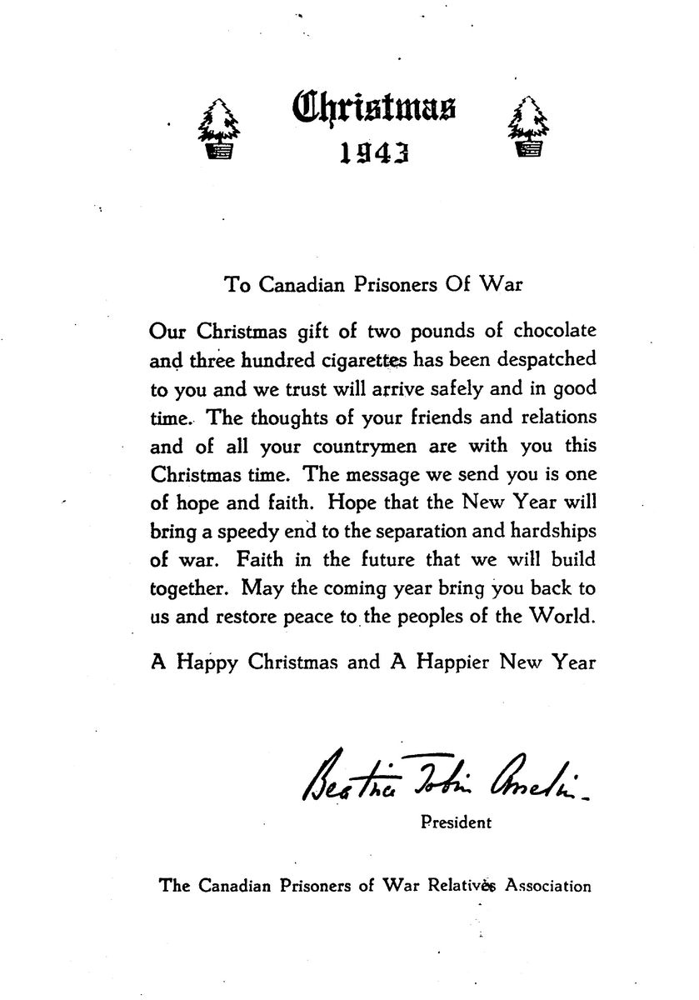
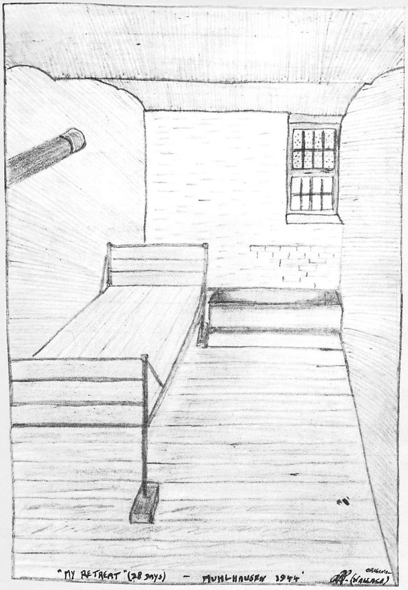
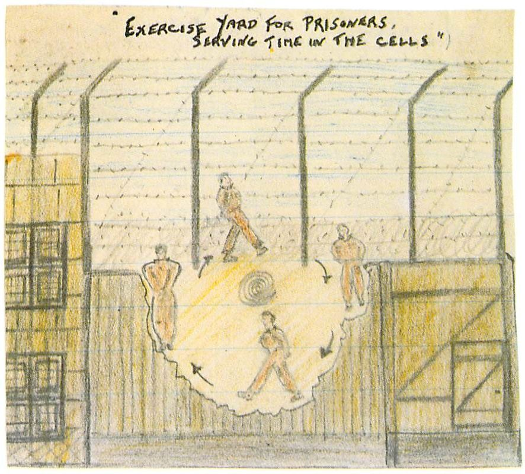
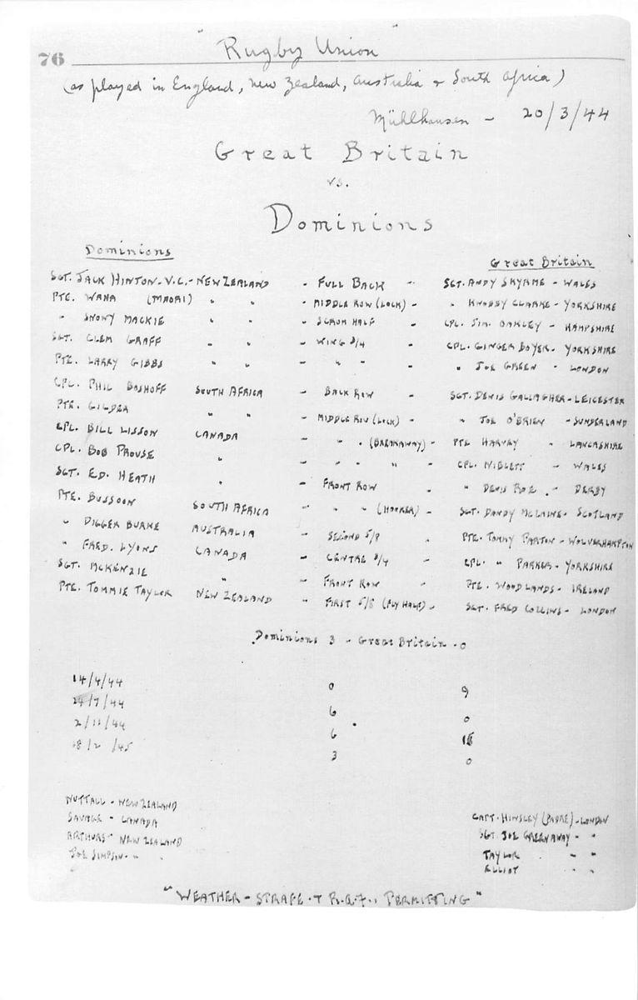
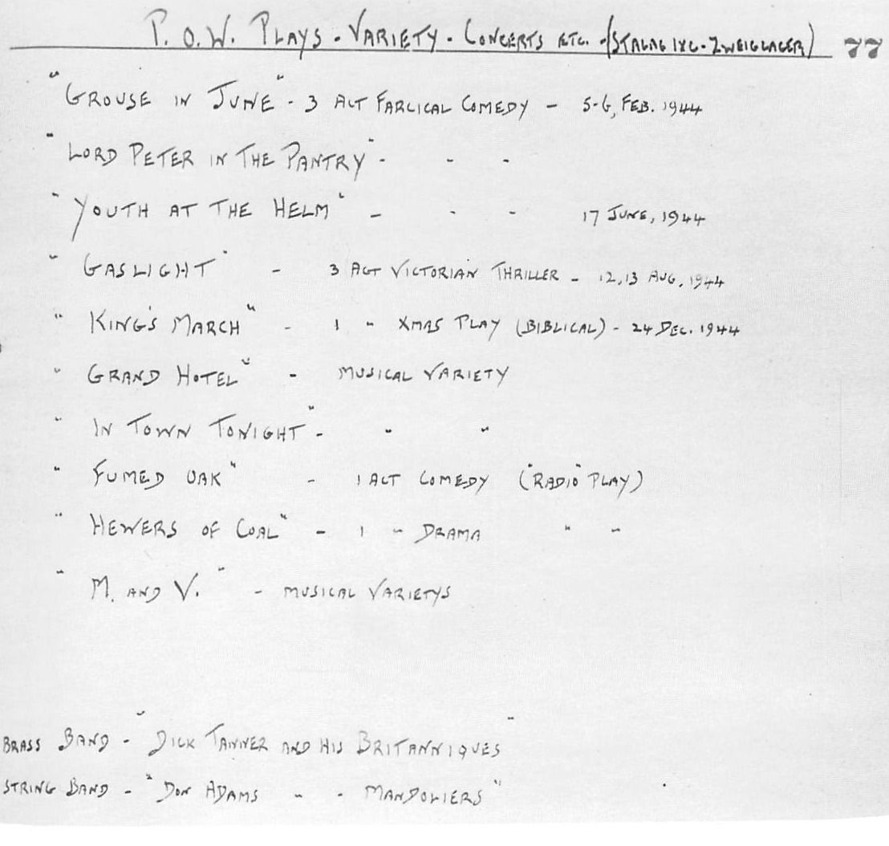
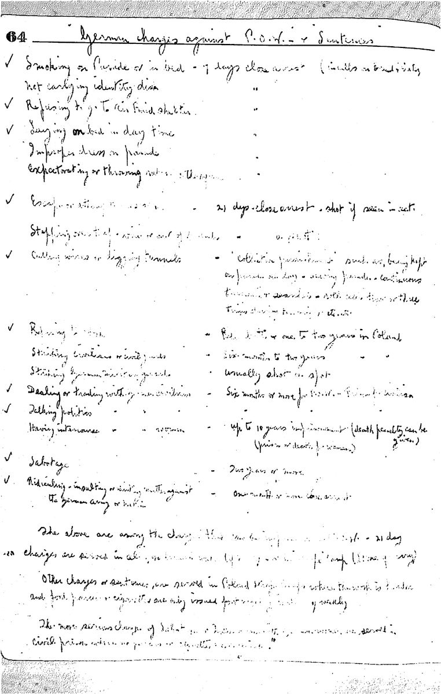
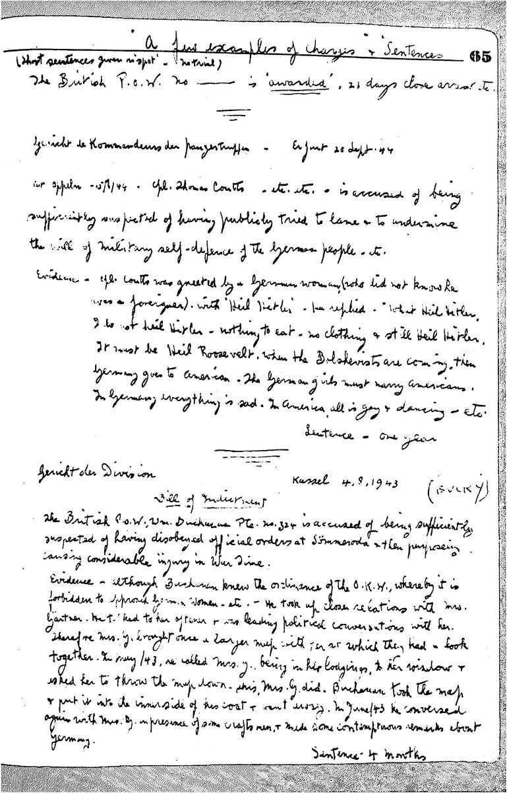
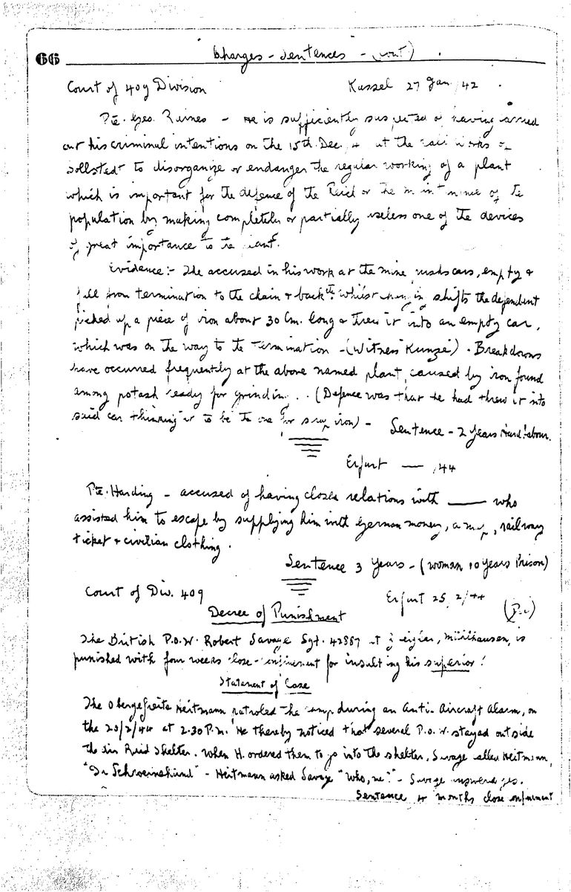
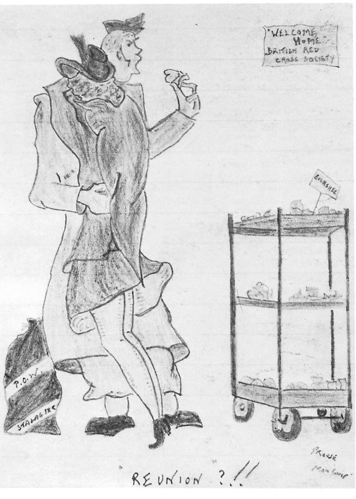
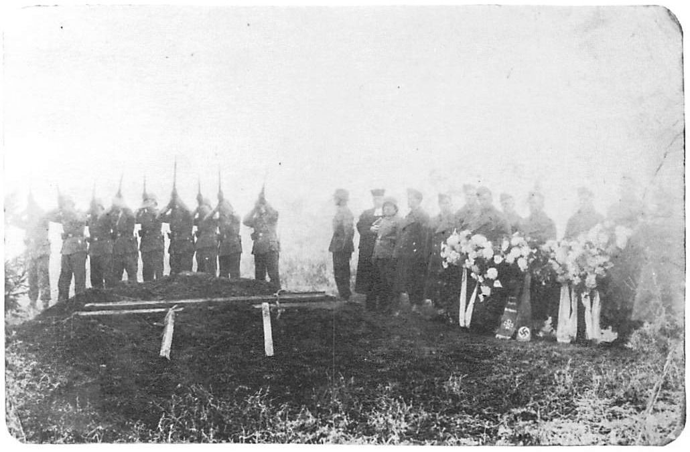

Chapter 7Passing the Time

On a cold day the following month, we were lined up for the usual morning roll call. We were called to attention as the Commandant strode into the camp for this twice-daily ritual. He was wearing his winter greatcoat that had a pale grey collar. The mousey fur around his fat face struck me as comical and I started to chuckle. As he passed down the line of prisoners and came directly in front of me, I couldn’t hold it back any longer and started to laugh uncontrollably. He screamed something in German and his heavy jowls became livid in anger. Another guard, whom we had nicknamed ‘Plank-face’, took up the screaming and I was hauled out in front of the parade. I had a burning butt cupped in my hand and this was quickly noticed. They sentenced me to seven days in solitary and I was marched away immediately to the dungeon cells. This was on November 20, the day that ‘Plank-face’ became my deadly and hated enemy.
I took stock of my cell, which was about fifteen feet long and nine feet wide. The small barred window high on the wall looked out onto a stone exterior, and only a little daylight filtered in from above as the cell was underground. There was a wooden bunk without mattress or pillow. Two blankets were issued but only at night. The lone source of heat came from a small wood stove outside the cell door. This was usually unlit but, even when burning, the heat didn’t get into the cell because the door was solidly constructed, except for a ‘glass eye’ that stared at you constantly.
I looked through the eye but drew a blank. I learned later that a guard, looking through the eye from the outside, could see the whole interior magnified when making his rounds of inspection. That was to become my means of aggravating ‘Plank-face’ on his four daily visits. I found that, by wetting my finger and rubbing it on the walls of the cell, I could smear the eye by coating it with whitewash.

The following morning, ‘Plank-face’ arrived with another guard who brought my daily jug of water and three slices of black bread. He ranted and raved at me but I acted dumb, letting my mouth hang open and repeating over and over ‘Nixverstein’ (nicht verstehen), a prisoner’s regular method of getting out of trouble by pretending he didn’t understand. I did understand his dire threats but, on every visit, when he found the eye smeared, I continued to act stupid and grinned at him until he got sick of me and finally gave up in disgust. He knew what I was doing but couldn’t catch me at it.
He would try sneaking in at odd hours but, when you are in a cell by yourself, the slightest noise becomes magnified. I’d either hear his boots creak or sense that he was outside. Before he could enter, I’d yell ‘Hello Plank-face, you ugly bastard, how are you today?’ He’d come rushing in and say in German, ‘What is "Plank-face"?’ and I’d reply, ‘Nixverstein!’ He hated my guts and I hated his. He was only an Obergefreiter, maybe a step above a lance corporal, but he was a dyed-in-the-wool Nazi, a member of the Party. The other guards and even the Commandant seemed to fear him. We figured he was a Nazi stooge and informer. He was about six feet tall with thin stooped shoulders. His whole body was angular and bony. He had sunken baleful eyes set in a skull-like, evil face. His cheeks were hollow and the long etched crease lines extended down to the corners of his lips, pulling his mouth down into a perpetual surly expression. I hated the son-of-a-bitch.
On the third morning, after the guards’ visit I kept hearing a voice calling my name. It was very faint and at first I thought it was my imagination but it continued and I tried to figure where it was coming from. Finally, I traced it to a small iron plate on the cell wall and, by tugging and pulling, I was able to remove the plate and reveal a soot clean-out space. The voice became clearer and when I put my ear to the space I could hear quite well.
It was the voice of a New Zealand sergeant, Jack Hinton, the only VC winner in our camp. He told me to hold my hand in the hole with palm up. I did so and, within seconds, a cigarette dropped into my palm, followed by a match. He was in the cell above me, which had a stove pipe inside it. By removing the clean-out plate from the pipe, he could put his hand in the opening and flick the cigarette past the elbow and into the flue, where it dropped into my cell. I believe he received the cigarettes from his combine, who bribed one of the friendly guards to pass them along. The cigarettes were a godsend but I had to blow the smoke into the flue, smoke the cigarette as low as possible and then grind the remains into the soot. Even with these precautions, ‘Plank-face’ would come in, sniff the air and accuse me of smoking. I’d just shrug as he searched me and the cell. He never did catch on to the method, so he couldn’t charge me, which would have been an additional seven days confinement.
Prisoners in solitary would be taken out three times a day. In the morning, we’d be taken to the latrine and then to the washrooms where we were locked in for fifteen minutes to wash and shave. We would always manage a quick smoke from butts that had been hidden in the ashes of the boilers by other prisoners. In the afternoons we’d get our exercise in a small yard completely surrounded by high walls. Here we would walk in small circles with our hands behind our backs. On one occasion, when I dropped my hands to my sides, ‘Plank-face’ yelled at me to get them behind my back. I didn’t like being yelled at so I ignored him. He screamed in his usual insane manner and finally drew his pistol and threatened to shoot me. I stopped my circling and we stood glaring at each other as he again repeated his threat. I lost my temper and dared him to pull the trigger, called him all the rotten names I could think of and finishing the tirade by telling him that he didn’t have the guts to shoot. The outburst was heard in the main camp and other guards came running in and stepped between us, pushing me to one side. There was a long discussion between the Germans as we resumed our circling. Our exercise period was cut short and we were returned to our cells.

I never heard anything further of the incident, but the next day I didn’t receive my daily rations and another guard replaced ‘Plank-face’. He was named Fritz and, unlike ‘Plank-face’, had seen front line action and was easier to get along with. He advised me not to cross ‘Plank-face’ as he was considered dangerous even by the other guards, who hated and feared him. I took the warning and decided to soft-pedal my harassment and ignore him, at least for the meantime!
At night we would be taken to the latrine around 9:30. Here, under cover of darkness, my combine would do their best to try and pass me some extra food. What with trying to go to the latrine and having the guard flashing his light on and off me, it was hard to consume very much. All I could usually manage was a couple of mouthfuls, which I had to chew between the flashes of light.
My seven days confinement seemed like a lifetime but finally it was behind me and I felt free again as I left my cell to rejoin my comrades in the main prison. They had a hot meal ready for me, prepared from my Red Cross parcel. The fried spam and biscuits were heaven, and so was the hot cup of tea followed by a chocolate bar and a cigarette. It seemed that the seven days were worth it just to come back to this.
The routine of daily life in prison passed slowly. At times it was boring and very discouraging. At other times there was the tinge of danger that made it exhilarating, but the things that made it possible to endure were the comradeship and unselfishness of most prisoners, along with the humour of daily happenings.
Included in these was our weekly trip to the showers where for a brief period you could feel liberated. There was lots of laughing and horseplay, especially if you dropped your soap and bent over to pick it up. The safest method was to get your back to a wall and slide down. Otherwise you were assured of being goosed and there was no guarantee of by what or by whom!
Weekend activities varied. On occasion we had dances where you tried to have fun without feeling too ‘fruity’. If you danced with one partner too often, you soon became aware of sly glances and knowing whispers.

Poker and bridge were popular pastimes but the all-time favourite for many of us was ‘horse racing’, a board game introduced by the Aussies, where cigarettes were used for betting and literally thousands changed hands. When the originators were due for repatriation they turned the game over to those who were the deepest in debt, myself and two other Canadians. It didn’t take long to clear our collective obligations but, before we were able to realize any profits, the Germans stepped in and closed the game down.
We held auctions where cigarettes or prison money served as cash. A bar of chocolate would bring 200 cigarettes, soap went for 50 and tooth paste or shoe polish would go for 100 cigarettes each. The highest priced item was a quarter-pound of tea. At one auction this brought 500 Reich marks in POW money, equivalent to 150 Canadian dollars.
During this period cigarettes were plentiful. We received them from home or from organizations in lots of 300 or 1,000. It was either feast or famine in the cigarette supply. You’d either be loaded or picking up butts if you’d lost at poker. If I played for cigarettes, I couldn’t win. When I played for prison money, which I thought was worthless, I couldn’t lose.
I used the money for toilet paper and occasionally for lighting twigs to brew a tin of water for tea. When I accumulated too much, I’d turn it over to the British confidant man, either for buying extra instruments through the Red Cross or for the escape fund. The last lot I turned in was about 3,000 marks, the largest amount I had won. The confidant man asked me why I didn’t send some of it home. This was when I learned that each mark was worth 30 cents Canadian. I found it hard to believe but, when he insisted that this was the truth, I asked him to send 500 of the 3,000 marks to my mother, just as a test. Months later I received a thank you letter and I finally believed that the money was good. From then on, I couldn’t win a mark, let alone a cigarette!
When the camp wasn’t under punishment, we also had Saturday night concerts or boxing matches. Our camp band was well organized, with instruments received through the Red Cross, and its trumpeter kept the whole camp alive and laughing with his variety of tunes to let us know what was taking place. A few examples were: ‘The Love Bug Will Get You’ (MO inspection for vermin); ‘Don’t Tie My Hands, Let Me Wander’ (chains on Canadians—a.m.); ‘Deepest Shelter in Town’ (air raid; to shelters); ‘A Hunting We Will Go’ (Gestapo search); ‘Trees’ (issue of brushwood for fires); ‘Hold Your Hand Out You Naughty Boy’ (camp punishment); ‘Oh You Nasty Man’ (when the Jerry known as ‘Double Amp’ was near); and ‘Let’s Put Out The Lights And Go To Sleep’ (lights out, 10:00 p.m.).

The trumpet was just one means of passing on information. We existed on rumours and the favourite question was, ‘What’s the "prop" today?’ (Propaganda). If the news was encouraging, we were elated for days on end. If bad, when the Allies suffered reverses, we suffered with them and felt fits of depression. Fortunately, the men soon bounced back and in time learned to roll with the punches. Inwardly, we knew that we would eventually win and it was just a case of existing and staying alive until the big day arrived.
Every day, a British NCO would visit each room and call out, ‘News Time’. He was the runner who would bring us the latest word from the BBC. We never knew where the wireless was located, how it was obtained, or who operated it, but we were always grateful for the service.
We would also get information from men sent into town to unload box-cars, who would then have quiet conversations with the French train engineers. Scraps of information came from prisoners transferred from other camps, too. In this way we heard that a Canadian had been shot and killed when trying to escape from a strafe camp. Another had purposely held his thumb on a rock in the stone quarry and had persuaded another prisoner to hit it with a sledge hammer in order to get out of work. His thumb was amputated and he had a few months’ rest in the hospital, then was sent back to work. We learned of men killed while attempting to escape, others killed in salt mine cave-ins and still others sentenced to hard labour in Poland for sabotage or striking their guards. We also heard of the mass murder of Polish officers in Katyn forest.



One day we heard a strange and unfamiliar noise in the sky. We knew it was some type of aircraft but we could never catch sight of it. It was some time before we learned that this was the new jet aircraft the Germans had developed. It was the second ‘new’ thing that I had seen as a prisoner, the first being the chain saw that I had used in the work kommando to cut logs.
These people, if nothing else, were resourceful. They had trucks which ran on wood instead of gasoline, using small square blocks of wood which were burned in a boiler on the back of the trucks. I didn’t know the principle on which they worked, but they did run. Then there was the ersatz coffee we drank, which I understood was made from acorns, and the black bread, which looked as if it was covered in sawdust. On enquiry, I was told that it was sawdust!
In the wood factory I had worked in, the stoves burned sawdust. This was packed wet into a double-walled cylinder and, when lit, it burned with a blue flame. There wasn’t a lot of heat, but they did work. (We supplemented the heat by burning our bed boards. The only thing wrong with this was that, when you burnt too many, the straw palliasse fell through to the bunk underneath.)
Aside from being resourceful, though, the Germans were also either very stupid or single-minded. For example, during the constant Gestapo searches, if they were looking for knives, they would ignore some other forbidden item. One day, during a surprise search, they came tearing in looking for guns. I was lying on my bunk, looking over my map, trying to figure which way to go on some future escape. They threw the map to the floor and proceeded to slit my palliasse wide open, strewing the straw every which way. They tore the place apart but the map was left lying there. This search was successful for them but only by accident. Most of the Gestapo had left when one of the accompanying guards walked across the courtyard and, in ducking under the line of underwear and socks hanging in the yard, he banged his head on a sock with a pistol concealed in the toe. He rubbed his head but continued on his way. All of a sudden he stopped as it gradually dawned on him that a sock should not be so hard. He was the hero of the day and the whole camp was put on strafe (punishment).
The punishment for that episode was that every last man was ordered to sew and mend all day. This was a very light and stupid punishment but I believe it was meant to ridicule us, as we had to do the mending in the courtyard under the eyes of the Germans.
I could see ‘Gee-guts’, the Commandant, (sometimes also known as ‘Lard-ass’) laughing as he watched the procedure from his office window. What made it galling was that as he stood there he was eating the bully-beef from one of our Red Cross parcels. He calmly cut pieces out with his knife and shoved them in his ugly fat face.
We did our best to get back at the guards in any way we could. Crazy humour was rampant and I fully believe the Jerrys thought we were all nuts. Prisoners went out of their way with inane gestures and silly antics to confuse them and the Germans often had a blank or confused look and appeared unable to make head or tail out of the insane activities of their captives.
The guards loved Canadian cigarettes and, when they were plentiful (after receiving a carton from home), a favourite trick was to light-up in front of a guard, take a couple of puffs, then throw the cigarette at his feet. You could see his eyes widen, waiting for you to move on so that he could retrieve the large butt. Instead, you would grin at him, step forward and grind it under your heel. Cruel maybe, but effective, as we were the prisoners and they, our captors and so-called superiors, who knew of Germany’s shortages and, through us, knew of the riches of our homeland.
Some of our guards were as fed up with the war as we were, especially those who had seen frontline action. These men, usually having been wounded, were given POW camp duties and plainly disliked the job. In conversation, their favourite expressions were, ‘Kein Essen, keine Zigaretten, alles kaputt.’ (Nothing to eat, no cigarettes, all is ruined!) All they wanted was to get the war over and return to their families.
As in all nations, there were the good, the bad and the absolutely rotten. For example, there was ‘Schmid’ (or ‘Smitty’). He was extremely short and had a ruddy cherubic face and a perpetual grin. He looked like a miniature Santa Claus and could even be classed as ‘cute’. When other guards weren’t around he tried to be friendly, and some prisoners slipped him the odd free fag for trying to be nice. Then there was ‘Fritz’. He sported a glass eye, and delighted in ordering prisoners around when other guards were within hearing, but on his own he was strictly on the take and could be bribed for favours. For the third type, I’ll just say, ‘Plank-face’.
Very few of the guards or officers could give an order quietly. They had to scream their instructions, a continuous repetition of ‘Raus’ (short for heraus) and ‘Schnell machen’, literally, ‘Get out and make it fast’. Most prisoners muttered ‘FO’, in response!
I had my eyes on one of the guard’s ribbons and, being an avid collector, I tried on several occasions to brush against him and ‘acquire’ the ribbon that had miniature crossed swords affixed. Having no success, I offered him a few cigarettes in trade and was surprised when he promptly accepted and handed me the souvenir. Another item I collected by the same method was a ‘Death’s Head’ ring. This particular guard seemed over-anxious to trade and I got it for ten cigarettes. I don’t believe the ring really belonged to him. The reason for my assumption was that this insignia (a skull) was only worn by the Waffen-SS Totenkopfverbände or Death’s Head Units, the infamous collection of professional soldiers under the direct command of Himmler. Being ‘fighting’ soldiers, they would not be classed as criminals, like the SS (Schutzstaffeln—Nazi Party Troops), the SD (Sicherheitsdienst—Security Service), or even the Gestapo (Geheime Staatspolizei—political police force), but many unlawful acts were attributed to them, such as the shooting of unarmed prisoners, massacres and other atrocities.
Prisoners of war were aware that among the camp staff there was always one or sometimes two Gestapo or SD men present, usually with ears tuned in for anything political or racial being said against Germany. They spoke perfect English and acted as interpreters, officially, but were there for other purposes and were always trying to engage prisoners in conversation. The majority of prisoners smelled a rat and would not have anything to do with them and their oily manner.
The plain-clothed Gestapo, who conducted the periodic searches, were something else. You could spot them a mile away with their long black leather coats and their stubby Hitler moustaches. They’d come charging in with a bunch of guards and literally tear the place apart. They would very seldom find anything, as usually we’d get tipped-off ahead of time by bribed guards. If they hadn’t been so sinister, they would have been comical, as they all looked alike, just like a bunch of cloned Hitlers.
On the POW side, variety was the rule. In a camp the size of ours, you mingled with all types of men. Name a trade or occupation and we had it. There were electricians, carpenters, tinsmiths, loggers, miners, etc., etc. The camp could produce men who could pick any lock or remove the gold fillings from your teeth. We had musicians, actors, poets and some very good artists and cartoonists. There were cultured and well-educated men and men who didn’t know their rear ends from a hole in the ground. There were lawyers and doctors, excellent surgeons, plus a few titled men, all intent on doing their bit in adversity.
British ‘regulars’, hardened to army life in Egypt or India, seemed to have a quiet air of endurance and patience. Some would sit knitting for hours on end as others strummed away on banjos or any instrument they could get their hands on. We even had a pipe major who practised constantly on a chanter (used by pipers for bagpipe practice—the Germans called them ‘doodle-sacks’). ‘Pipey’, as he was affectionately called, was respected by all. This was fortunate, as the plaintive notes drove us ‘bananas’.
Among the other characters, there was ‘Nick’, a garrulous individual and not extremely popular. His redeeming feature was his ability to act. He took part in some of the camp plays and immediately became the person he was portraying. His acting was so good, he amazed the prisoners, who usually gave him a standing ovation despite their personal feelings about him. ‘Bucky’ was a miniature scoundrel, short, dark and handsome in a rough-and tough-looking way. He had a perpetual grin and was a born scrounger. In other words, if you wanted something, ask Bucky and he would produce it. ‘Sinc’ was a very gentle man who should never have been in the army. He was poetic, well-educated, well mannered, and exuded kindness and compassion. ‘Lard-ass’ (not to be confused with the Commandant) was fat, bloated and greedy, a real life Billy Bunter of the Gem and Magnet type of English school magazines.
In one of the other camps, there was the heir to a prominent British millionaire. I was told that during the march into captivity after the Battle of Dunkirk, this private had given IOUs for race horses he owned in trade for bread rations. I heard later, after release, that he had honoured these debts! Although this is only hearsay, I was inclined to believe it. After the war, I read an article describing this man’s exploits in post-war England, the main gist of which was that he had squandered his fortune in ‘high-living’ and ‘give-aways’ to former comrades. The story ended by saying that he was broke but happy. With his last pounds he had purchased a horse-drawn wagon, stocked it with pots and pans and was living a gypsy-type existence travelling and selling across the countryside.
In our combine, we had a good group of guys who shared everything equally, including private parcels from home or anything scrounged. There was only one exception, an over-weight character who worked in the camp kitchen. This no doubt supplied him with extra grub which enabled him to maintain his enormous bulk, an exception to the rule in normal POW life. I wasn’t too fond of him but at times, when I felt exceptionally hungry, I’d catch myself staring longingly at his fat arms, wondering what they’d taste like sliced in inch-thick steaks and fried to a turn. I knew I’d never stoop to this but I have to admit that I did get a great deal of satisfaction from imagining it!
On more than one occasion when we had run out of our meagre ration of sugar, we would notice him sneaking something from under his bottom bunk and slipping it into his cup of ersatz coffee. The rest of us discussed the matter and decided to search under his bunk after he had left the room for kitchen duty. Sure enough, we found a parcel he had received from home containing sugar and other small luxuries. He hadn’t mentioned it and had kept it hidden from other members of the combine. Since we shared everything, including home parcels, we confiscated what was left and had ourselves a party. The most enjoyable part of the episode was watching the look on his face when he returned from duty and found the parcel missing. We didn’t let on that anything was wrong and he couldn’t say a word without giving himself away.
One of the other Canadians had a voracious appetite. He was a one-man combine himself and always ate his Red Cross parcel issue in one sitting. He wolfed it down and, being forever hungry, he was always on the prowl for anything edible that could be scrounged or stolen. He even stole the potatoes we had to sort.
Potato sorting was a chore everyone disliked. We took turns going to the storage cellar located underground in the middle of the compound. The entrance was covered with a locked man-hole cover which led down a steep ladder to the storage area where the potatoes were laid on crated boards to allow the air to circulate. It was our job to inspect the potatoes, weed out the rotten ones, of which there were plenty, and re-stack the remainder. When I say rotten potatoes, I mean putrid. They were black and squishy and fell apart in your hands, a soggy rotten pulp.
After his first stint in the potato cellar, it didn’t take our one-man combine long to pick the padlock on dark nights, remove the manhole cover and load his blouse-like army tunic. How he managed on his own to escape being seen by the ever-prowling guards was beyond me, but do it he did, and successfully!
This man was quite a character, a loner and tough as nails. He was forever getting into fights, just for the love of it, and never seemed to be without a black eye. It became a kind of a trade-mark. He was pugnacious but he had a certain child-like guile that made him likeable. On one occasion, when he was locked up in solitary for some infraction of rules, we were being herded down the dungeon-like stairs to the air-raid shelters. On passing his cell, he suddenly stepped out with the cell door in his arms and asked what all the commotion was about. He was promptly locked up again and, after serving his time, wouldn’t reveal how he had removed the heavy door. Being on a bread and water diet, it wouldn’t have surprised me if he had made nightly forays to the potato cellar to satisfy his enormous appetite even while in strict solitary confinement.
With such an odd assortment of characters, it was difficult to get too depressed during the long camp days, but after ‘lights out’ you were on your own. Sometimes it was a pleasant escape from reality, a release into the dreamland of good food, wine, women and song. My main dream never varied—it was always bacon and eggs followed by ice cream. But there could also be loneliness, as I dreamed of my wife or of women who remained faceless and elusive.

The weekends were the worst, especially on Sundays, when German soldiers would walk their girls past the building. The girls would invariably look up to the prisoners peering at them through the bars and flirt openly. This would start a chorus of wolf whistles that enraged the girls’ escorts, who would hurry them away. We would all laugh, but just the sight of the pretty girls would leave us with a hunger that increased the loneliness.
A few soldiers couldn’t wait for freedom and indulged in homosexuality. Fortunately, they were a very small minority but disturbing all the same when you realized that some were otherwise tough soldiers. It made you wonder if you, too, could be affected someday if the war went on endlessly. Although the thought was revolting to most, it had to make one ponder the long-term effect of prison on a person’s character. I felt sure that part of the problem was started by one man in our midst. He wasn’t even a soldier but a member of the Navy, Army and Air Force Institution (NAAFI) that ran servicemen’s canteens during the war. The story went that during the Battle of Dunkirk and just before capture, this man discarded his NAAFI uniform and obtained an officer’s uniform from one of the dead, hoping to receive better treatment as a prisoner. Eventually ending up in Oflag (officer’s camp), he was quickly discovered. He then claimed that he was a corporal and was placed in the NCO camp. It was soon ascertained that he was homosexual and he became a camp fixture. The man was extremely clean, good looking and well built, in a slender way. It was common knowledge that he took very good care of his ‘love’ of the moment, doing his washing and serving his every need, within the scope of prison life. I only had one brush with him, when visiting the camp medical room situated in the lower corridors. He brushed against me in passing, seized my wrist and whispered, ‘I’d like to get to know you better.’ I tried to free my wrist and was amazed at his strength and grip. I then told him that if he didn’t let go and bugger off’, I’d knock his teeth down his throat. His smiling reply was, ‘Would you do that, Bob? I’d just love it!’ He didn’t release my wrist, so I lost my temper and slammed him against the stone walls, knocking the wind out of him. I didn’t wait around and hurried away. He never spoke to me again and looked right through me in passing, for which I was grateful. We badly needed fresh fruit in prison but certainly not of that sort.
Other soldiers found different alternatives. Once, we received a medicine ball from the Red Cross and it was much appreciated as an instrument of exercise. Unfortunately, an individual had other nefarious designs on it and the ball was found to be missing. It was eventually discovered in the drying room used for hanging our washing but something had happened that had ruined the ball’s character. A hole had been punched into the downy innards and we discovered very good reasons to believe a Casanova had made it the object of his affections! Evidently, desperation breeds desperate measures in some cases but fortunately they were few.
